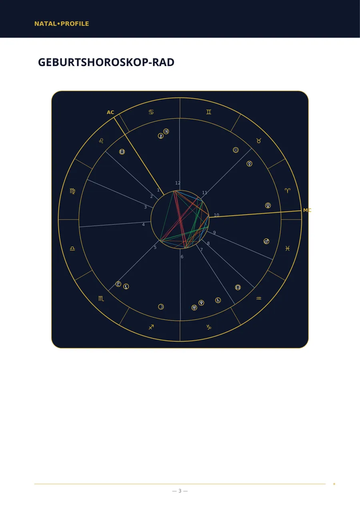
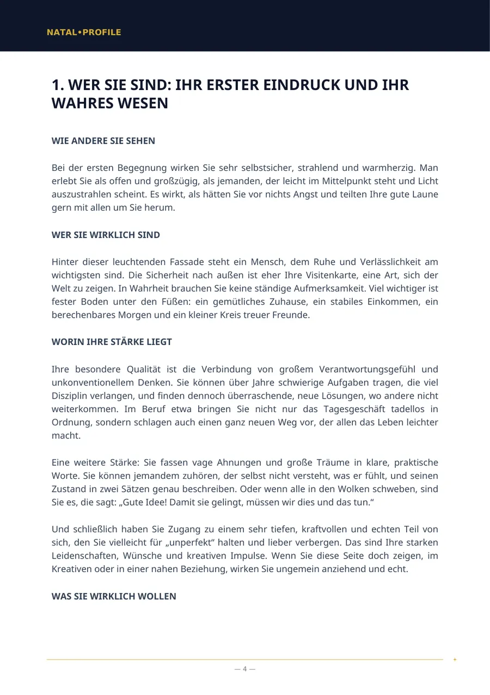
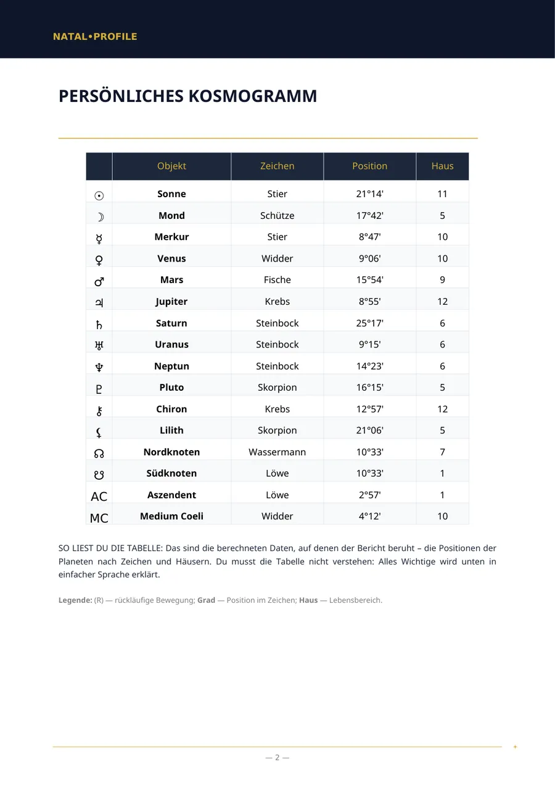
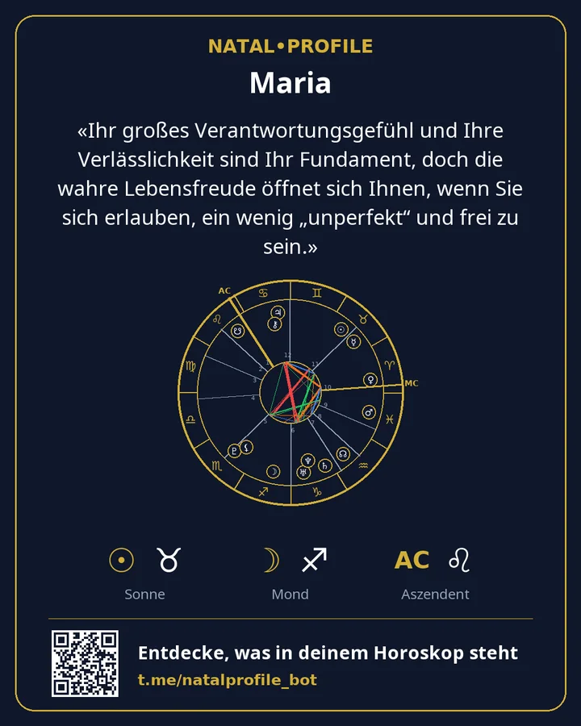

Dein Geburtshoroskop, erklärt in einfacher Sprache
Gib Datum, Uhrzeit und Ort deiner Geburt ein und erhalte in wenigen Minuten ein PDF: wie dein Charakter ist, wo deine Stärke liegt, was dich bremst und womit du anfangen kannst. Ohne Fachjargon und ohne Allgemeinplätze über Sternzeichen.
- Berechnet mit den Swiss Ephemeris
- 15 Sprachen
- Kein Abo
Zwei schnelle Berechnungen
Sie laufen in deinem Browser. Es wird nichts gesendet oder gespeichert.
Sonnenzeichen und Element
Das ganze Horoskop deuten →Das Sonnenzeichen ist einer von Dutzenden Punkten im Horoskop. Ein Bericht berücksichtigt alle Planeten, Häuser und ihre Verbindungen.
Lebenszahl
Numerologie-Analyse erhalten →Berechnet wie im Bericht des Bots: Die Ziffern des Datums werden addiert, bis eine Ziffer übrig bleibt. Die Namenszahlen berechnet der Bot.
So sieht ein Bericht aus
Echte Seiten des Berichts „Geburtshoroskop“. Das ist ein Beispiel: Die Geburtsdaten sind erfunden.




«Ihr großes Verantwortungsgefühl und Ihre Verlässlichkeit sind Ihr Fundament, doch die wahre Lebensfreude öffnet sich Ihnen, wenn Sie sich erlauben, ein wenig „unperfekt“ und frei zu sein.»
Was du bestellen kannst
Die Kapitellisten auf den Berichtsseiten sind genau die, die du im PDF erhältst. Die Preise sind in Telegram Stars angegeben.
Geburtshoroskop (Komplettanalyse)
Eine vollständige Analyse deines Charakters aus Datum, Uhrzeit und Ort der Geburt.
Geburtshoroskop (Basisanalyse)
Eine Analyse deines Charakters, wenn die Geburtszeit unbekannt ist.
Kompatibilitätsanalyse (Komplett)
Zwei Menschen: was euch angezogen hat, wo ihr uneins seid und was ihr einander gebt.
Kompatibilitätsanalyse (Basis)
Wie eure Charaktere zusammenpassen, wenn die Geburtszeit unbekannt ist.
Karriere- und Finanzanalyse
Worin du im Beruf stark bist, welche Tätigkeiten zu dir passen und wie du mit Geld umgehst.
Kinderhoroskop — dein Leitfaden, um dein Kind besser zu verstehen
Was dein Kind braucht, um sich ruhig zu fühlen, und wobei du es unterstützen kannst.
Jahresprognose (Solar Return)
Die Themen deines Jahres von Geburtstag zu Geburtstag, mit datierten Zeiträumen.
Tageshoroskop
Eine Vorschau für heute nach der genauen Uhrzeit der Mondaspekte.
Numerologie nach Namen und Geburtsdatum
Die Zahlen deines Namens und Geburtsdatums nach dem pythagoreischen System.
Vedische Karte (Jyotish)
Ein vedisches Horoskop: Lagna, Grahas, Nakshatra und Dasha-Perioden.
So funktioniert es
Von der ersten Nachricht bis zur fertigen Datei in wenigen Minuten.
Bot öffnen
In Telegram, ohne Registrierung und ohne Passwörter.
Daten eingeben
Name, Datum, Uhrzeit und Ort der Geburt. Der Ort wird aus einer Liste gewählt.
PDF erhalten
Meist innerhalb von 5 Minuten. Die Datei kommt direkt in den Chat.
Karte behalten
Ein Bild mit deinem Horoskop und dem Kernsatz aus dem Bericht.
Bezahlung
Berichte werden mit Telegram Stars direkt im Chat mit dem Bot bezahlt. Es gibt kein Abo — du zahlst einmal pro Bericht.
Das erste Kapitel der Geburtsanalyse mit deinem Horoskop und ein Tageshoroskop — je einmal ohne Bezahlung.
Du bezahlst einen Bericht und bekommst einen Link. Dein Freund öffnet ihn, gibt seine eigenen Daten ein und erhält die Analyse.
Im Bot gibt es den Hinweis „Zahlung klappt nicht?“, und der Support antwortet in Telegram.
Deine Daten
Datum, Uhrzeit und Ort der Geburt werden nur gebraucht, um das Horoskop zu berechnen und den Bericht zu schreiben.
Sobald das PDF verschickt ist, werden Name, Datum, Uhrzeit und Geburtsort gelöscht.
Das PDF liegt 24 Stunden auf dem Server und wird dann gelöscht. Bei dir bleibt es im Chat.
Die Rechner laufen in deinem Browser. Die Website hat keine Formulare, keine Registrierung und keine Tracker.
Häufige Fragen
Ich kenne meine Geburtszeit nicht. Was nun?
Wähle einen Bericht „ohne Geburtszeit“. Häuser und Aszendent entfallen dann, aber Charakter, Gefühle, Denkweise und Beziehungen werden auch ohne sie beschrieben.
Worin liegt der Unterschied zu einem Sternzeichen-Horoskop?
Ein Sternzeichen-Horoskop nutzt nur den Stand der Sonne. Ein Bericht berechnet alle Planeten, Häuser und ihre Verbindungen für dein Geburtsdatum, deine Geburtszeit und deinen Geburtsort.
Wer schreibt den Text des Berichts?
Die Planetenpositionen berechnet eine Software mit den Swiss Ephemeris. Anschließend verfasst ein Sprachmodell den Text aus diesen Berechnungen nach festen Regeln.
In welchen Sprachen gibt es Berichte?
In fünfzehn: Englisch, Russisch, Spanisch, Hindi, Portugiesisch, Vietnamesisch, Türkisch, Indonesisch, Usbekisch, Kasachisch, Französisch, Deutsch, Italienisch, Arabisch und Persisch.
Kann ich mein Geld zurückbekommen?
Ein Bericht wird für dich persönlich erstellt, deshalb wird die Zahlung nach Zustellung des PDFs nicht erstattet. Wurde ein Bericht durch unser Verschulden nicht erstellt, wird der volle Betrag erstattet.
Starte mit dem Gratis-Kapitel
Wir berechnen dein Horoskop und schicken dir das erste Kapitel der echten Analyse. Wenn es dir gefällt, holst du dir die vollständige.